【暗黙の仕様】
WOLF RPGエディターで全体にわたって影響する、最初は気付きにくい仕様について説明します。
<一覧> （クリックすると詳細へ飛びます）
【1】数値欄に100万以上の数値を入力すると「変数」が読み込まれる
【2】それぞれのマップイベントは10個のセルフ変数を持ち、それぞれのコモンイベントは100個のセルフ変数を持つ
【3】コモンイベントはマップイベントより高速処理される（＆ コモン内で±21億超えると数値が逆転する）
【4】イベントが実行される順番は 並列マップEv→自動マップEv→自動コモンEv→並列コモンEvの順
【5】並列イベントはイベント途中でも起動条件が満たされなくなった直後に終了する。
が、本当は「その直後のウェイト時や、ウェイトが起きそうな処理」まで処理が続く
【6】Dataフォルダが存在しないときにEditor.exeを起動すると新規データが作れる
【7】キャラクターを移動させる際、通行不能マスと1/4マスでも重なってると動けないが
イベントと重なっている場合は(1移動で抜けられる場合のみ)動ける
【8】「ゲーム基本設定」でキャラクター移動幅を「1マス」にしてあるとイベントの接触判定が縦横に0.5マス伸びる
【9】「決定キーで実行」「プレイヤー接触」「イベント接触」で起動するイベントは、
イベント「本体」がある場所が「通行可能」か「通行不能」かで接触判定の仕方が変わる
【10】ウェイト有りの「トランジション実行」中は「並列イベント」の実行も一時停止する
【11】等幅フォントでも、フォントサイズが「奇数」の場合だけ「半角2文字」と「全角」がずれて表示される
【12】DBから出力したCSVファイル内の<<!--DATANAME--!>>を含む項目はデータID「手動で入力」による「データ名」を示す
【13】処理が500万回になってなくても500万回エラーは起きる(一部の重い処理で50倍カウントしてる)
【14】どんなに長い変数やデータ名でも表示されるのは40文字まで
|
【1】 数値欄に100万以上の数値を入力すると「変数」が読み込まれる。 |
| ほとんどの数値欄は、1000000（100万）以上の値を入れることで「変数の値」を読み込むことができます。 以下は「ピクチャ」コマンドへの数値入力例です。 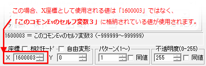 詳しいことは【変数呼び出し値 一覧】をご覧ください。 |
|
【2】 それぞれのマップイベントは10個のセルフ変数を持ち、 |
| 各マップイベントは、そのイベント内だけで使える「マップセルフ変数」を10個持っています。 「セルフ変数」は言葉の通り、「そのイベント自身が持っている変数」で、たとえば 「マップイベント0番のセルフ変数1」の値を変更しても、他のマップイベントのセルフ変数1は変化しません。 同様に、各コモンイベントにはコモンイベント内で使える「コモンセルフ変数」を100個持っています。 コモンセルフ変数の「0～4番、10～100番」は数値だけ入れられる変数で、 「5～9番」は文字列だけを入れられる変数となっています。 どうして「セルフ変数」が用意されているのかというと、「そのイベント内でしか使わない変数」がとても多いからです。 例えば、ある宝箱がすでに開かれているかを記録するなら、宝箱イベントのセルフ変数0番が「0」ならまだ開いてない、 「1」ならもう開かれている、という前提で処理を作ればいいわけです。 この宝箱のようなケースでいちいち新しい｢通常変数｣(どのイベントからでも変更できる変数)を作るのは面倒ですし、 通常変数に頼ると他の場所でうっかりその通常変数が変わってしまったとき、どこで数値が変わったのか 分からなくなることも出てきます。セルフ変数で対応できることは、なるべくセルフ変数で処理した方が安全です。 |
| 【3】 コモンイベントはマップイベントより高速処理される （＆ コモン内で±21億超えると数値が逆転する） |
| 実はコモンイベント内のコマンドは、マップイベントに比べて平均5～10倍以上の速度で実行されます。 直接「自動起動」や「並列起動」するコモンイベントだけでなく、 「マップイベントから呼び出されるコモンイベント」も高速化されて実行されます。 これはゲーム起動時に、プログラム的に「非常に単純な処理で実行しても安全」だと判断された コモンイベント内のコマンドだけ「最適化」され、高速モードで実行されるためです。 たとえば『変数操作』コマンドの場合なら、チェックボックスを全てオフにした状態ならば ほとんどの場合は最適化され、高速に実行されるようになります。 （「結果を±999999に収める」や「実数計算「X番の変数呼出」など 何か1つでもチェックをオンにすると高速処理されなくなります） 【コモンイベント側だけで起きる副作用】 ただし高速化されるかわりに副作用もあり、コモンイベント内で最適化された計算は、 オプションなしだと2147483647(約21.5億)より大きい値になると-2147483647になる、 といった±が逆転する現象が発生します。 いったん1000倍にして計算する場合などによく数値があふれがちなので注意してください。 この現象を起こさないようにしたい場合は、「変数操作」なら何かのチェックボックスを入れて計算してください。 高速処理モードでなければ、どんなに増減しても「±20億」で数値が止まるようになります。 |
| 【4】イベントが実行される順番は 並列マップEv→自動マップEv→自動コモンEv→並列コモンEvの順 |
| ややマニアックな話ですが、同時に起動条件が満たされた場合、 イベントが実行される処理順（起動優先順）は以下のようになっています。 並列マップイベント→自動マップイベント→自動コモンイベント→並列コモンイベント ※それぞれ、「イベントIDが小さい方から大きい順」に起動判定が行われ、実行されます。 ※『自動イベント』が1つでも実行中だと他の自動イベントは起動しません。 ※『並列イベント』は他のあらゆるイベントが実行中でも、条件さえ満たせば実行されます。 なので「このフレーム中に行われた全処理数」を知りたい場合は、一番最後の処理になる 「コモンイベントの一番下のID」に「並列起動」のコモンイベントを作り、 その中で「このフレーム中の処理数」を取得すればいいわけです。 同様に、「RPG基本システム」の初期化処理（ウィンドウの表示位置などを設定しています）は 最後の「並列コモンEv」内で行われているので、マップイベント側で1フレームのウェイトをしないと 初期化が実行されません。 サンプルゲームのタイトル処理で、最初に1フレームのウェイトを入れているのはそのためです。 ※おまけ 同じ場所に重ねたイベントを「接触」で起動した場合の実行順 同じ場所に2つ以上重ねたイベントを「プレイヤー/イベント接触」で起動させたときは、 両方が同時に起動して、「IDが小さい方から大きい方」に順に実行されます。 また、重なったイベントを「決定キーで起動」したときは、「IDが最も小さいイベント」だけ実行されます。 |
| 【5】並列イベントはイベント途中でも起動条件が満たされなくなった直後に終了する。 が、本当は「その直後のウェイト時や、ウェイトが起きそうな処理」まで処理が続く |
| 「並列実行」イベントは、一般的には 「イベントの途中であろうが、起動条件が満たされなくなった直後に終了する」 のですが、実はその後もちょっとだけ処理が続けられる場合があります。 というのも、高速化のために「一気にやれる処理は一気に行う」という内部処理で動作しているため、 「変数操作」によって並列イベントの起動条件が満たされなくなったとしても、 その後の『ウェイトが発生しうる処理』『処理の中断可能性があるコマンド』のところまでは 実行され続ける場合があるのです。 たとえば「並列実行」イベントの起動条件「V1 が 0 のとき」で以下の処理が実行された場合……。 ■変数操作: V1[] = 1 + 0 ← ここでV1=1になるので起動条件が満たされなくなるが…… ■変数操作: V2[] = 1 + 0 ← 実は続けてこの処理も実行される ■ウェイト：1 フレーム ←ここでようやく並列実行イベントが止まる ■変数操作: V3[] = 2 + 0 ←この処理は実行されない V1が「1」になった時点で条件が満たされなくなるのでそのタイミングで止まりそうですが、 実際にイベントが終了するのは3つめの「ウェイト」処理のタイミングで、 その間にある「V2 = 1」の処理は実行されます。 想定外の処理が行われる場合もあるので、起動条件から外れる変数操作をするときは 安全のために、その直後に「イベント処理中断」を入れるのがよいでしょう。 なお「並列イベント」のこの挙動に対して、「自動実行」イベントの方は途中で起動条件が 満たされなくなってもいったん最後まで処理が実行され続けます。 |
| 【6】 Dataフォルダが存在しないときにEditor.exeを起動すると新規データが作れる |
| 実は、「Data」フォルダが存在しないときにEditor.exeを起動すると、 以下のような新規データを作る画面が表示されます。 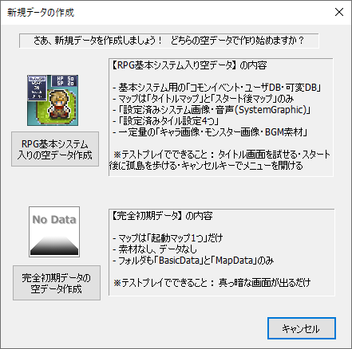 『RPG基本システム入り空データ』には、「RPG基本システム」関連データと、 マップとして「タイトル画面」「スタート後画面」の2つ、そしていくらかの素材が入っています。 この状態からテストプレイしてできることは、タイトル画面の選択肢と、スタート後にキャンセルキーで メニュー展開ができること、そして孤島でキャラクターを移動させることだけです。 『完全初期データ』は本当に最低限のデータだけで他に何も入っていません。 テストプレイを実行しても、真っ暗な画面が表示されるだけで、何のキーを押しても何も起こりません。 どちらも、Data作成してすぐに編集、ならびにテストプレイが可能になっています。 必要な方で開発を始めてください。 |
| 【7】キャラクターを移動させる際、通行不能マスと1/4マスでも重なってると動けないが イベントと重なっている場合は(1移動で抜けられる場合のみ)動ける |
| 実はキャラクターを移動させる際、 ●そのキャラが「通行不能マス」と1/4でも重なっていると、そのキャラは動けなくなる。 ●そのキャラが「他の通行不能マップイベント」と重なっている場合、1移動で通行可能な場所に 出られる場合に限り、そこから移動できる。 （半歩移動なら半分まで重なっても平気、全歩移動なら完全に重なっても移動できる） という仕様の差があります。 この仕様の使い所はあまりないかもしれませんが、 「少しでも重なると動けなくなるギミック」を作るときは「チップ処理」でマップ書き換えし、 「半分重なっても逃げられるイベント」を作る場合は「マップイベント」で作る、 といった使い分けができるかもしれません。 |
| 【8】「ゲーム基本設定」でキャラクター移動幅を「1マス」にしてあると イベントの接触判定が縦横に0.5マス伸びる |
| 「ゲーム基本設定」で「デフォルトのキャラクター移動幅」を「0.5マス」から「1マス」にした場合、 マップイベントとの接触判定は、自動的に縦横に0.5マス分伸びるようになっています。 これは、「半歩左に設置」や「半歩上に設置」がオンにされたマップイベントがあったとき、 「1マス」移動の主人公では「0.5マス分ずれて設置されたイベント」に 直接接触できなくなって絶対にイベントが起動できなくなる問題があったため、 それを避けるための暗黙の仕様です。 以下は、「デフォルトのキャラクター移動幅」が「1マス」のもとで ・「半歩左に設置」オプションをオンにして出現させたネコ（右） と ・主人公（左） が接触した場面です。「0.5マス」分離れていても起動できているのが分かります。 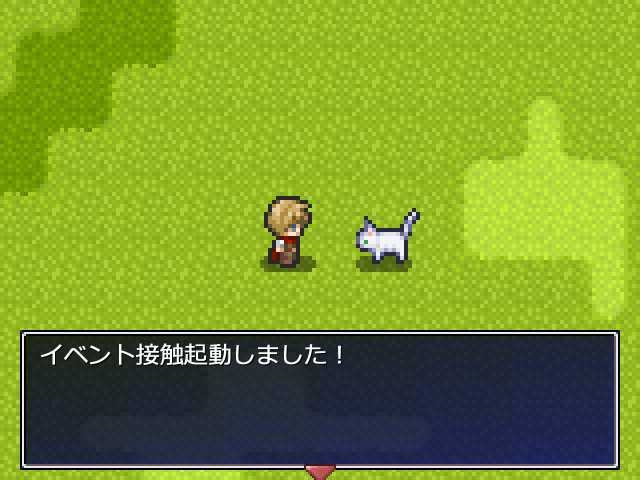 |
| 【9】「決定キーで実行」「プレイヤー接触」「イベント接触」で起動するイベントは、 イベント「本体」の場所が「通行可能」か「通行不能」かで接触判定が変わる |
| ほとんどの場合では気にならない問題ですが、 「決定キーで起動」や「プレイヤー接触」「イベント接触」のイベントは、 イベント「本体」の場所が通行可能か否かで以下のように接触判定の仕方が変わります。 ●イベント「本体」が通行「可能」な場所にある場合は上に乗らないと起動しない。 ●イベント「本体」が通行「不能」な場所にある場合は隣マスから起動できる。 ●キャラクター画像を出す場合も同様で、通行不能なEvは隣から起動でき、 通行可能なら乗る必要がある。 それぞれ例を紹介していきます。 ここでは例として、以下のようなイベントを配置したものとします。マップ出口と本棚のイベントは 「範囲拡張」が設定されています。どれも「プレイヤー接触」で起動するイベントです。 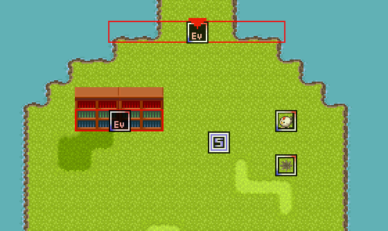 【イベント「本体」が通行「可能」な場所にある場合は上に乗る必要がある】 たとえば「マップ出口」のように、透明(すり抜け可)なイベント本体が 「通行可能な場所」に配置された場合、その拡張範囲も含め、 「上に乗らないと起動しないイベント」になります。 つまりこの場合は、拡張範囲がはみ出している「横にある水地帯」に接触しても何も起きません。 ↓ 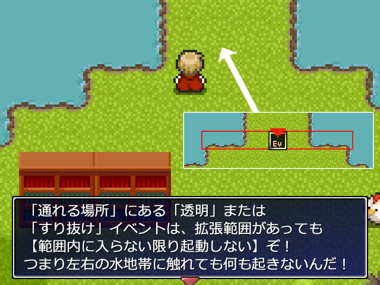 【イベント「本体」が通行「不能」な場所にある場合は隣から起動できる】 しかし、「本棚の中」のように、透明(すり抜け可)なイベント本体が 「通れない場所」に配置されているイベントは、 拡張範囲の隣のマスからでもイベント実行できます。 さっきのパターンだと拡張範囲内の水に触れても何も起きなかったのにです！ これが、「イベント本体の場所の通行設定」によって挙動が変化する部分です。  【キャラクター画像を出す場合も同様で、通行不能なEvは隣から起動でき、 通行可能なら乗る必要がある】 ちなみに、「マップイベントに画像をセットした場合」もイベント起動の挙動は変化します。 画像あり + 「すり抜け」オフのときは隣のマスからイベント起動できますが、 画像あり + 「すり抜け」オン(または「画像なし」)のときは上に乗らないとイベントが起動しません。 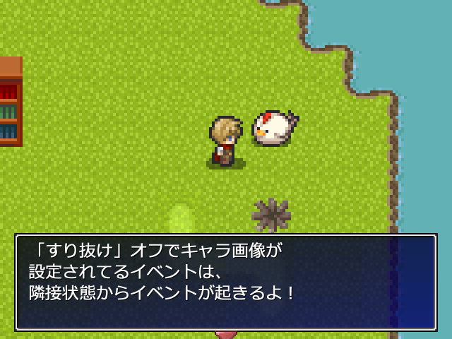 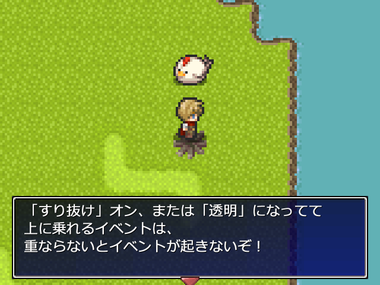 また、以下のような差も発生しますので注意してください。 ●「プレイヤー/イベント接触」イベントの「本体」がある座標が「通行不能」の場合は、 「接触拡張範囲」内のあらゆる「壁」（通行不能タイル）や「マップイベント」に向かって 移動しようとしたときもそのイベントが起動する。 （元々は前述の通り「長い本棚」のイベントなどを起動させる用途を想定している仕様ですが、 本棚のある場所以上に範囲拡張すると妙な挙動になってしまいます） ●「プレイヤー/イベント接触」イベントの「本体」がある座標が「通行可能」の場合は、 拡張範囲内の「壁」に向かって移動しようとしてもイベントは起きない。 （通行可能な場所に置いた範囲拡張Evは、エンカウント範囲Evなどを想定した挙動になります） |
| 【10】ウェイト有りの「トランジション実行」中は「並列イベント」の実行も一時停止する |
| 表題に書いてある通り、「ﾄﾗﾝｼﾞｼｮﾝﾀｲﾌﾟ指定」コマンドで「完了までｳｪｲﾄ」をオンにした場合、 その後の「トランジション実行」（あるいはトランジションありの「場所移動」コマンド）で画面が 切り替わっている間は、「メインのイベント（決定キーや接触・自動起動のもの）」だけでなく 「並列イベント」も処理が停止します。 これは起動しないという意味ではなく、「処理行数が進まなくなる」という意味です。 なお、その逆で「ﾄﾗﾝｼﾞｼｮﾝﾀｲﾌﾟ指定」で「完了までｳｪｲﾄ」をオフにしてある場合は 「トランジション実行」時に切り替わりながらでもイベント処理が実行され続けます。 シビアなタイミングの処理を作っている場合に、意外と重要な差になることがあります。 |
| 【11】等幅フォントでもフォントサイズが「奇数」だと半角2文字と全角でちょっとずれる |
| 等幅（とうはば）フォントは通常、半角の2文字が全角1文字分の横幅になるように 調整されているのですが、ウディタ上ではフォントサイズが「奇数」の場合だけ、 微妙にズレが生じる場合があります。 【フォントサイズ20と21を比較した例】 21のような「奇数サイズ」のフォントだと半角2文字が全角1文字からちょっとズレてしまう例 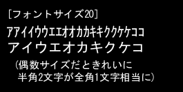 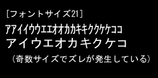 これ自体はライブラリの都合で仕様ですので、等幅フォントで半角と全角を混ぜて きれいに幅を合わせたい場合は、必ず「偶数のフォントサイズ」を指定してください。 【※[x2]ゲーム画面ではこの問題は起きません】 なお、「320ｘ240[x2]」など、2倍のゲーム画面サイズを選んでいる場合は、 指定したフォントサイズが内部的に[x2]倍されて表示されるので必ず偶数サイズになるため、 こういった問題は発生しません。 |
| 【12】DBから出力したCSVファイル内の<<!--DATANAME--!>>を 含む項目はデータID「手動で入力」による「データ名」を示す |
| データベースから「手動で入力」のデータIDを持つデータをCSV出力すると、 そのファイルの中に「<<!--DATANAME--!>>オオカミx1」のような項目が 混ざっていることがあります。 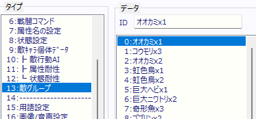 ↓ データ0～5番だけCSVとして出力 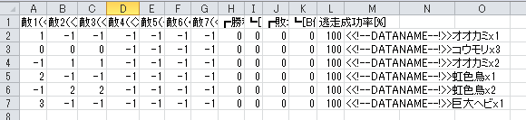 このデータ末尾にある「<<!--DATANAME--!>>オオカミx1」の項目は、 「この行の【データ名】はオオカミx1です」ということを表しています。 なぜこんな妙な仕組みになっているかというと、実は旧バージョンでは 「データ名」をCSVに出力できなかったため、後付けでデータ名読み書きを 実現するための苦肉の策として実装された機能がこれなのです。 なので不審なデータでも無駄な部分でもないので、CSVの編集時には うっかりこの<<!--DATANAME--!>>を含む項目をカットしないよう注意してください。 |
| 【13】処理が500万回になってなくても500万回エラーは起きる (一部の重い処理で50倍カウントしてる) |
| 1フレーム中に500万回処理を行うと「無限ループになっている可能性があります」と 出てくるエラーがあります。通常、処理は1回ごとに1カウントされますが、 一部の処理では特別に「1回で複数カウントされる補正」が加わっています。 これは、普通の変数操作に比べて処理負荷が数十倍以上高く、 無限ループに入った際に500万回エラーが出るまで 「何分も待たされてしまうような処理」を早めに検出するための仕組みです。 具体的には以下の通りです。 ・「文字列操作」の「に↓のファイル内容読込」（50倍） ・「文字列操作」の「をファイル↓に出力」（50倍） ・「文字列操作」の「に↓のファイルをBase64ファイルで読込」（50倍） ・「文字列操作」の「から正規表現で置換」（50倍） ・「文字列操作」の「から正規表現で()内を抽出」（50倍） ・「セーブ･ロード処理」の「変数・文字列の読み込み」（10倍） ・「セーブ･ロード処理」の「セーブデータへの（変数）書き込み」（10倍） これらの「ファイル読み込み」系や「正規表現」、「セーブデータへの読み書き」は、 書いてある倍数以上に処理時間がかかるため、無限ループになった際に フリーズと誤解しない（何分も待たなくていい）よう、 待ち時間が1/10～1/50になるよう調整しているわけです。 （さすがに1フレームに10万回もこれらの処理をする場合は ウェイトを多めに挟むなどして内容を見直してくださるのがよいと思います。 プレイヤー視点だとGame.exeのフリーズを疑う停止時間になってしまうので） ※ちなみに、この補正は「Sys108:[読]現ﾌﾚｰﾑ開始からのｺﾏﾝﾄﾞ処理数」にも かかっています。通常は負荷チェックのためのシステム変数として使われるので 多くの場合は問題ないと思いますが、厳密に計りたい場合はご注意ください。 |